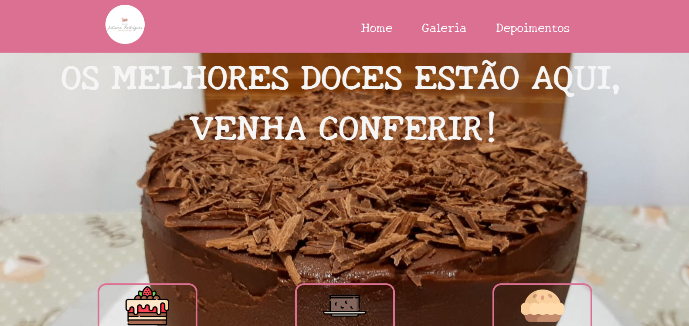
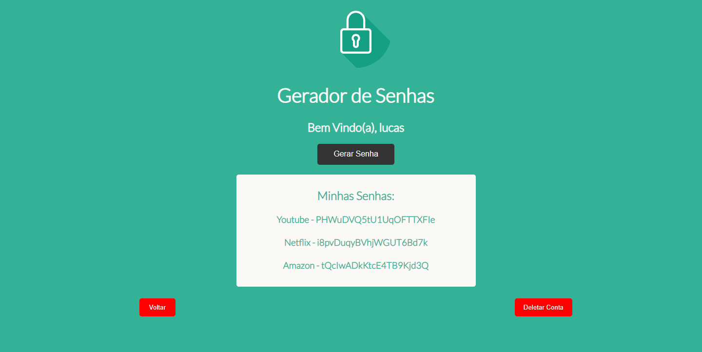
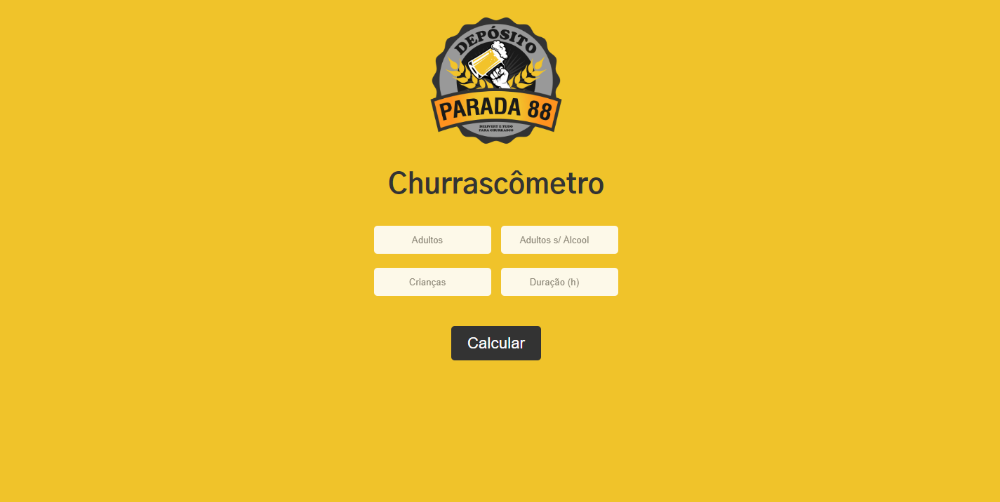

Portfólio
Lucas Lima
Desenvolvedor Full-Stack
Jacarepaguá - Rio de Janeiro - Brasil
(21) 97902-7703
lucas.lima34@hotmail.com
Desenvolvedor Front-End e Back-End
Em busca de uma oportunidade no mercado de trabalho
Estudando e aprimorando meus conhecimentos em Front-End e Back-End
Projetos
Doces Ju - Landing Page
Landing Page criada como forma de estudo. Aqui temos um exemplo de como uma loja de doces poderia utilizar uma página web para divulgar melhor seus serviços e tornar a marca mais profissional.
Password Manager
Um gerador e gerenciador de senhas vinculado à um banco de dados, que possui um sistema de login. Criado apenas como forma de estudo, não use para salvar suas senhas oficiais.
Churrascometro
Uma calculadora para aqueles que desejam fazer um churrasco, mas não sabem quanto de carne e bebida comprar. Aqui temosum exemplo de como uma loja poderia utilizá-lo.